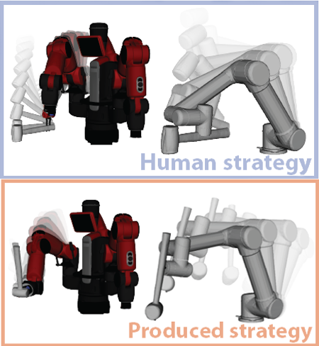

Understanding Physical Effects for Effective Tool-use

We present a robot learning and planning framework that produces an effective tool-use strategy with the least joint efforts, capable of handling objects different from training. Leveraging a Finite Element Method (FEM)-based simulator that reproduces fine-grained, continuous visual and physical effects given observed tool-use events, the essential physical properties contributing to the effects are identified through the proposed Iterative Deepening Symbolic Regression (IDSR) algorithm. We further devise an optimal control-based motion planning scheme to integrate robot- and tool-specific kinematics and dynamics to produce an effective trajectory that enacts the learned properties. In simulation, we demonstrate that the proposed framework can produce more effective tool-use strategies, drastically different from the observed ones in two exemplar tasks.